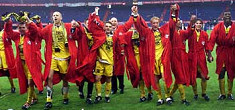

Donderdag 28 februari:
Halve finales:
Feyenoord - NAC (18 maart)
SC Heracles -
Roda JC
(19 maart)
Dinsdag 26 februari:
Fotoverslag FC Dordrecht - Roda JC
>>>
Maandag 25 februari:
Jong Oranje - Jong Noorwegen in Kerkrade
>>>
Zaterdag 23 februari:
Vitesse - Roda JC: 1-1
Donderdag 21 februari:
"Afschaffing play-offs bijna zeker"
>>>
Dinsdag 19 februari:
Roda verlengt met Atteveld en houdt staf compleet
>>>
Dinsdag 19 februari:
De nieuwe shirts
>>>
Maandag 18 februari:
Roda verlengt contract Koopman
>>>
Zondag 17 februari:
Fotoverslag Roda JC - FC Twente
>>>
Vrijdag 15 februari:
Zwitserse verdediger op proef bij Roda JC
>>>
Woensdag 13 februari:
Jeugdtoernooi Roda JC sterk bezet
>>>
Zondag 10 februari:
Fotoverslag Roda JC - Ajax
>>>
Donderdag 7 februari:
Andres Oper na operatie voorlopig uitgeschakeld
>>>
Maandag 4 februari:
'Feyenoord meldde zich bij Roda voor Meeuwis'
>>>
Zondag 3 februari:
FC Groningen - Roda JC: 1-1
Wegens
carnaval
geen
fotoverslag
Dinsdag 29 januari:
Linssen na dit seizoen van Venlo naar Kerkrade
>>>
Zondag 27 januari:
Fotoverslag Roda JC - NAC
>>>
foto: fotofrans
Internet
:
Http://www.koempel.nl
Contact:
koempel
ad
koempel
dot
nl
Web
koempel.nl
|
Foto's
|
Audio
|
Overige
|
Verslagen
|
Interactief
|
Links
|
Calendar